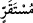

daha önce sâbit olan şey hakkında söylenir. Güneşin sâbit durmadığı ise mâlumdur.
Öyleyse nasıl “güneşin zevâli” denir?” denilirse, cevap şöyledir: Araplar öğle vaktinde
güneşin göğün ortasında sabit olduğuna inanırlar. Yine Şerhu’t-Takvîm’de der ki: “Eğer
‘Gök cisimleri sâkin olmadığı halde güneşe niçin seyyâre denilmiştir?’ diye sorarsan,
şöyle cevap veririm: Diğer yıldızlara göre daha hızlı hareket ettiği için böyle
denilmiştir. Çünkü diğer yıldızların hareketleri çok yavaştır. Onun için de “sevâbit/sâbit
yıldızlar” diye isimlendirilirler.
3- Başındaki lâm âkıbet lamıdır. “ kelimesi ise mimli masdardır. Yani güneş öyle
akar ki on iki burçtan her birinde özel bir tarzda karar kılması bu akmasının sonucudur.
Güneş her burçta bir ay kalır. Senenin ilk yarısında gece gündüzden, senenin ikinci
yarısında ise gündüz geceden alır. Güneş yükselmesinin sonuna yazın, alçalmasının
sonuna ise kışın ulaşır. Dört mevsimin değişmesi, yeryüzünde olanların geçim sebepleri
ve terbiyesi bunun sonucu gerçekleşir.
4- Güneş doğduğu ve battığı yerlerden her gün için takdir edilen bir yere doğru akıp
gider, demektir. Çünkü güneşin bir yıllık devrinde üç yüz altmış doğma ve batma yeri
vardır. Güneş her gün ayrı bir yerden doğar ve batar. Gelecek seneye kadar o doğduğu
ve battığı yerlere dönmez. Buna göre “ kelimesi, birinci vecihte olduğu gibi mekân
kelimesi, birinci vecihte olduğu gibi mekân
ismidir. Ancak birinci vecihteki mekan güneşin sene sonunda ulaştığı mekandır. Bu
vecihte ise güneşin hergün ulaştığı ve ötesine geçmediği mekandır.
5- “ kelimesi, zaman ismidir. Yâni güneş âlemin harap olması sırasında duracağı
kelimesi, zaman ismidir. Yâni güneş âlemin harap olması sırasında duracağı
ve hareketinin kesileceği zamana veya battığı yerden doğmak sûretiyle karar kılacağı ve
hâlinin değişeceği vakte kadar akıp gider. Nitekim Ebû Zer (r.a.) der ki: Mescide
girdim Rasûlullah (s.a.) orada oturuyordu. Güneş batınca “Ey Ebû Zer! Bu güneşin
nereye gittiğini biliyor musun?” diye sordu. Ben de: “Allah ve Resûlü daha iyi bilir.”
dedim. Bunun üzerine şöyle buyurdu: “Güneş arşın altında secde etmeye gider. Yeniden
doğmak için Allah Teâlâ’dan izin ister ve kendisine izin verilir. Yakın bir zamanda
secde edecek fakat secdesi kabul edilmeyecek. İzin isteyecek kendisine izin
verilmeyecek. Güneşe: “Geldiğin yoldan geri dön” denecek. Güneş de battığı yerden
doğacak.”[137] İşte “Güneş, kendisi için belirlenen yerde akar (döner).” sözünün
mânâsı budur.
Hadisten anlaşıldığına göre “ (güneş için belirlenen yer)” arşın altıdır. Güneşin
secde etmesi, emre boyun eğmesi demektir. Bu secdenin gerçek secde olması da
mümkündür. Çünkü Allah Teâlâ güneşte hayat ve idrâk yaratmaya kâdirdir ki bu ikisi ile
beraber secde etmesi mümkün olur. Bunun benzerleri daha önce geçmişti. Âriflerden
birisi der ki: Kişi abdestli olarak yatınca uykuda ruhunun secde ettiği gibi güneş de
arşın yanında ruhuyla secde eder.
İmâmü’l-Haremeyn ve diğer faziletli kimseler der ki: “Güneşin bir topluluğun
bulunduğu yerde batıp başka bir topluluğun bulunduğu yerde doğduğunda ihtilaf yoktur.
Gece de bir topluluğun bulunduğu yerde uzarken başkalarının bulunduğu yerde kısalır.